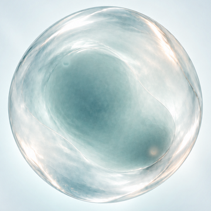
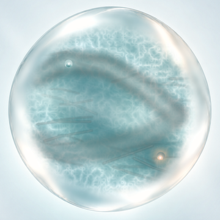

K2 Source Decision
这里不审 shader，也不审参数。只裁决：哪一张图才是 K2 静态 authority。四张图已经统一裁成同一个球体范围和尺寸。
当前问题：冻结静态复合图与 manifest 图层重合成不一致。若没有一张被你确认的 authority，不能继续推导 K2 动态字段。
四个候选

A · static_composite
当前冻结静态复合图。完整、柔和、内部有连续 cyan 体积。当前默认参考。

B · reference_foundation
参考 foundation。外观接近 A，用于确认是否应以 reference foundation 为源。

C · manifest layer-native
按正式 00–11 图层和 manifest 顺序重合成。可见噪声、线条和硬结构，与 A/B 不一致。

D · candidate optical field
从图层派生 optical/scatter/reflection 后重建。当前内部偏平，不能冒充 K2 authority。
你只需要给一个裁决
A = K2 authority 是 static_composite；允许后续围绕 A 修复/重建字段。
B = K2 authority 是 reference_foundation；允许后续围绕 B 修复/重建字段。
C = manifest 图层重合成才是 authority；接受它与 A/B 的视觉差异。
D = candidate optical field 可以作为 authority。
NONE = 四者都不是，需要新的 authored K2 source。
当前建议：A 或 B。C/D 会把当前已确认的源冲突继续带入下一步。